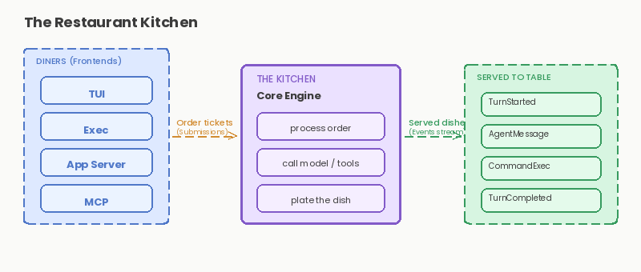
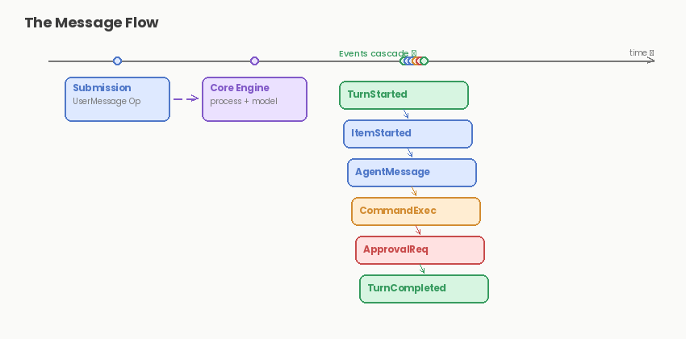
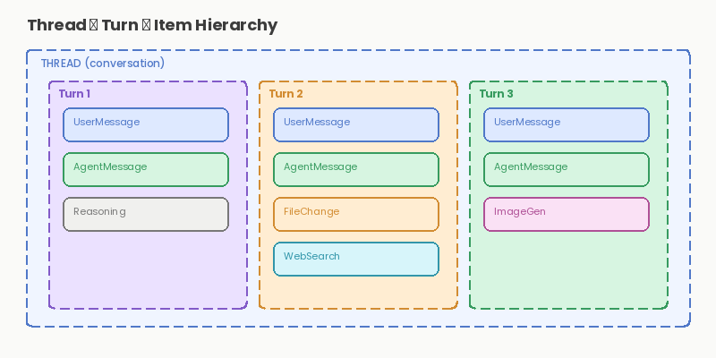

The Nervous System: How Components Talk
Last time, we saw the 10,000-foot view of Codex: the orchestrator that lets you command an AI agent to build, debug, and explore code. We saw it as a black box with users on one end and executed commands on the other. Clean. Simple. But wrong in the best way.
Today, we're cracking that box open. Not to see the engine yet, that comes next. Instead, we're studying the nervous system: the protocol that carries signals between every part of the system. Understanding this layer is crucial because it's where the magic of decoupling happens. This is the difference between a monolith and a living, breathing system.
Let me start with a surprisingly accurate metaphor.
The Restaurant Kitchen Analogy
Imagine a restaurant. A busy one. On one side, waiters take orders from diners. On the other side, chefs work at stations: prep, grill, and plating. In the middle: a ticket system.
The waiter doesn't shout across the kitchen. They don't interrupt the chef mid-flip. Instead, they write an order ticket and place it in the pass. The ticket has everything the chef needs: what to make, when it was ordered, and any special requests. The kitchen works through tickets in sequence.
When the dish is ready, the chef rings a bell. Or nowadays, the POS system sends a notification. The food waits in the window. A runner picks it up and delivers it to the table.
The kitchen doesn't know which diner ordered what. The diner doesn't see the chaos of the kitchen. The ticket system, the nervous system, connects them without coupling them.
Codex works exactly like this. And the protocol that implements it? It's called SQ/EQ: the Submission Queue and the Event Queue.

Submissions: The Order Tickets
When you send a command to Codex, you're not directly talking to the core engine. You're writing a Submission.
pub struct Submission {
pub id: String, // Unique ID to correlate with responses
pub op: Op, // The operation (the "order")
pub trace: Option<W3cTraceContext>, // W3C trace context for observability
}That's it. Three fields. But they pack a punch.
The id field is a UUID that ties your submission to the events that come back. You send a Submission with id: "abc-123", and when the system responds, it'll reference that same ID. This is how we keep track of what's what in an async, streaming world.
The trace field is optional but powerful. It carries W3C trace context, the industry standard for distributed tracing. If your Codex instance is part of a larger system (maybe a web service, maybe a monitoring pipeline), this traces the entire request from browser to backend to agent and back. It's observability baked into the protocol itself. No retrofitting needed.
The op field is the real treasure. It's an enum that represents every possible action the agent can take:
The Op Enum: Orders in the Kitchen
pub enum Op {
UserTurn { items: Vec<UserInput>, ... },
UserInput { items: Vec<UserInput>, ... },
Interrupt,
ExecApproval { decision: ReviewDecision, ... },
PatchApproval { decision: ReviewDecision, ... },
Shutdown,
ListMcpTools,
Undo,
ThreadRollback { num_turns: u32 },
// ... many more
}Let's focus on the main ones:
UserTurn (or UserInput): This is the bread and butter. The user types a prompt, asks for a change, uploads a file, whatever. This becomes a UserTurn submission with all the context: the current working directory, the approval policy ("ask me before running dangerous commands"), the sandbox policy ("restrict file access to this folder"), the model to use, and optional reasoning settings. It's a complete, self-contained request.
Interrupt: The chef needs to stop mid-order. You hit Ctrl+C. This becomes an Interrupt op. The agent aborts the current turn but doesn't nuke background processes.
ExecApproval and PatchApproval: The waiter comes back with a question: "The chef wants to know if they should run rm -rf / —approve?" You respond with ReviewDecision::Approved or ReviewDecision::Rejected. These ops carry your decision back to the kitchen.
Shutdown: Time to close. Codex cleans up and exits.
The beauty of this enum-based design is extensibility. Need a new operation? Add a variant to Op. The protocol doesn't change at the transport layer. New clients and old clients can coexist, each understanding what they need to.
Events: The Kitchen Responds
While submissions flow in, events flow out. They're the kitchen's response to your orders.
pub enum EventMsg {
TurnStarted(TurnStartedEvent),
AgentMessage(AgentMessageEvent),
AgentReasoning(AgentReasoningEvent),
ExecCommandBegin(ExecCommandBeginEvent),
ExecCommandOutputDelta(ExecCommandOutputDeltaEvent),
ExecCommandEnd(ExecCommandEndEvent),
ExecApprovalRequest(ExecApprovalRequestEvent),
RequestPermissions(RequestPermissionsEvent),
TurnComplete(TurnCompleteEvent),
// ... dozens more
}Here's the critical insight: events are not responses to submissions. They're not synchronous. The kitchen doesn't send back a single response to a single order. Instead, it emits a stream of events as work progresses.
You submit a form UserTurn with an ID abc-123, and the system starts cooking. Within milliseconds, you get:
- TurnStarted: The kitchen is accepting the order.
- AgentMessage: The agent starts thinking and outputs text. Streaming. Delta by delta.
- ExecCommandBegin: The agent wants to run a shell command.
- ExecCommandOutputDelta: Output from the command. Line by line.
- ExecApprovalRequest: Wait, the agent wants to delete a directory. Should we approve?
- (You respond with an ExecApproval submission.)
- ExecCommandEnd: The command finished.
- AgentMessage: More agent output.
- TurnComplete: The turn is done. Here's the summary.
All of this is streaming. In real-time. No waiting for the full turn to complete before you get feedback.

The Hierarchy: Threads, Turns, Items
Codex introduces a nested structure that mirrors how conversations work:
Thread (a conversation)
└── Turn (a back-and-forth)
├── Item (UserMessage)
├── Item (AgentMessage)
├── Item (Reasoning)
├── Item (WebSearch)
├── Item (CommandExecution - implicit in events)
└── Item (FileChange - implicit in events)A Thread is a conversation. It has an ID, a history, and context. You might have multiple threads open at once, one for each project, for example.
A Turn is a single round trip. You give the agent a prompt; it thinks, executes commands, updates files, and responds. That's one turn.
An Item is a discrete piece of work within a turn. The user's message is an item. The agent's response is an item. The agent's reasoning (if using reasoning models) is an item. A web search the agent performed is an item. Each item has its own ID, its own lifecycle.
This hierarchy lets the UI (or any frontend) render conversation in a granular way. You can stream in agent text character by character. You can show shell output as it arrives. You can display reasoning and toggle it collapsed. All without waiting.

The Async Channels: The Real Magic
How do submissions and events flow? Through async Rust channels.
At the core, Codex runs something like this:
// Frontend sends submissions here
let (tx_sub, rx_sub) = mpsc::channel::();
// Core sends events here
let (tx_event, rx_event) = mpsc::channel::();
// The core engine
tokio::spawn(async move {
while let Some(submission) = rx_sub.recv().await {
match submission.op {
Op::UserTurn { items, cwd, model, ... } => {
// Emit a TurnStarted event
tx_event.send(EventMsg::TurnStarted(...)).await?;
// Process the turn (call the model, execute commands, etc.)
// Emit AgentMessage, ExecCommandBegin, etc. as work progresses
// Emit TurnComplete when done
tx_event.send(EventMsg::TurnComplete(...)).await?;
}
Op::Interrupt => {
// Stop the current turn
tx_event.send(EventMsg::TurnAborted(...)).await?;
}
// ... handle other operations
}
}
});
// Frontend receives events here
while let Some(event) = rx_event.recv().await {
// Update UI, log, store, whatever
println!("{:?}", event);
}This is the nervous system in action. The frontend and core are decoupled by channels. The frontend doesn't wait for a response, it just sends a submission and listens on the event stream. The core doesn't need to know about the frontend, it just receives submissions and emits events.
Multiple frontends can connect to the same core. The web interface, the TUI, a CI/CD pipeline, all listening to the same event stream, all sending submissions to the same queue. Or you can have multiple cores, each with its own channel setup. The protocol is agnostic.
Why This Design Is Brilliant
Let's zoom out and appreciate what this architecture gives us:
Design Benefits
- Decoupling: The frontend doesn't know about the core's implementation. The core doesn't know about the frontend's UI framework. They speak a protocol, nothing more. You can swap the frontend without touching the core. You can reimplement the core without breaking clients.
- Concurrency: Async channels let many operations happen in parallel. While the agent is thinking, you can already be sending the next submission (an approval, a file edit, whatever). Events arrive as they're ready, not in lockstep.
- Streaming: Because events aren't "responses" but a stream, you get real-time feedback. The agent's text arrives character by character. Shell output streams in line by line. The UI feels responsive, not blocky.
- Testability: Want to test the core logic? Mock the submission channel and inspect the events. Want to test the frontend? Inject a dummy event stream. No need for a full end-to-end setup.
- Observability: W3C trace context flows through every submission, connecting the entire request lifecycle. Logs, metrics, and traces can all follow the same breadcrumb trail.
- Extensibility: New operations? New events? Add them to the enum. Old and new systems can coexist because they're negotiating over a well-defined protocol, not tightly coupled code.
The SQ/EQ Protocol in Real Life
To see this in action, imagine you're using Codex to refactor some code:
- You submit: Op::UserTurn { items: ["Refactor this function for readability"], cwd: "/project", model: "claude-opus" }
- The core receives the submission in rx_sub.
- Immediately, the core emits EventMsg::TurnStarted, and your frontend shows a loading spinner.
- The model is called. As it generates text, the core emits EventMsg::AgentMessage with deltas. Your UI shows the text appearing word by word.
- The model proposes a code edit. The core emits EventMsg::ExecCommandBegin and starts applying the patch.
- But wait, the patch affects a critical file. Your approval policy says "ask me first." The core emits EventMsg::ExecApprovalRequest with details of the patch.
- Your UI interrupts and asks: "Apply this patch?" You hit "approve."
- You submit: Op::ExecApproval { id: "xyz", decision: ReviewDecision::Approved }
- The core receives this in the submission queue and proceeds. It emits EventMsg::PatchApplyEnd when done.
- The turn continues. More agent output, maybe a web search, maybe a command. Each step emits events.
- Finally, EventMsg::TurnComplete arrives with the full summary, token usage, reasoning summary if applicable.
All of this, from your initial prompt to the final summary, is tracked by submission and event IDs. It's traceable, loggable, and, most importantly, real-time.
What's Hidden Here
You might notice we're not talking about what the core actually does. How does it call the model? How does it execute shell commands? Where does the approval logic live? How are files changed?
That's the engine. And that's next.
Right now, you know how signals travel through the system. You know the highway. Next, we'll see what's driving on it, the Core Engine that receives submissions, thinks, decides, and emits events that ripple through the entire system.
Key Takeaways
- The SQ/EQ protocol decouples frontends from the core using async channels.
- Submissions are the incoming orders: each has a UUID, an operation (Op enum), and optional trace context.
- Events are the outgoing signals: a stream, not a single response, allowing real-time feedback.
- The hierarchy (Thread → Turn → Item) mirrors conversation structure and enables granular rendering.
- This design enables multiple frontends, streaming, testability, and observability.
- W3C trace context propagates through the entire system for end-to-end tracing.
The nervous system is elegant, and it's the foundation for everything else. Without it, Codex would be a monolithic black box. With it, it's a living system where many actors, UIs, models, tools, users, coordinate in real-time. Next time: We enter the Core Engine. Where submissions turn into thoughts. Where the model is invoked, where approvals are enforced, and where files are changed. This is where the real magic happens. Get ready.
Originally published on LinkedIn.